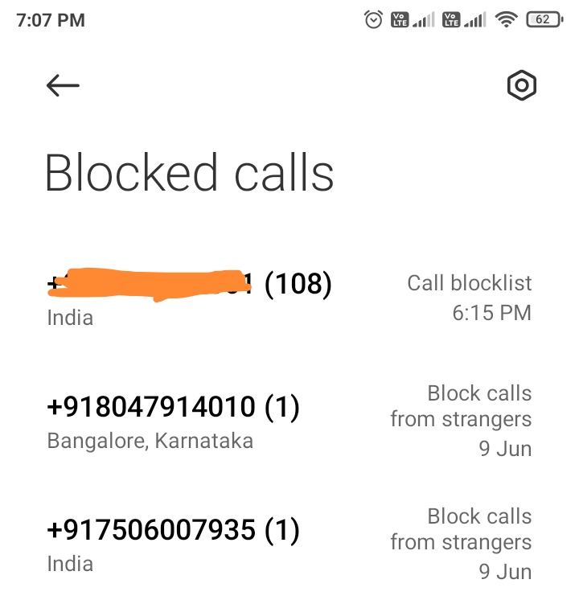
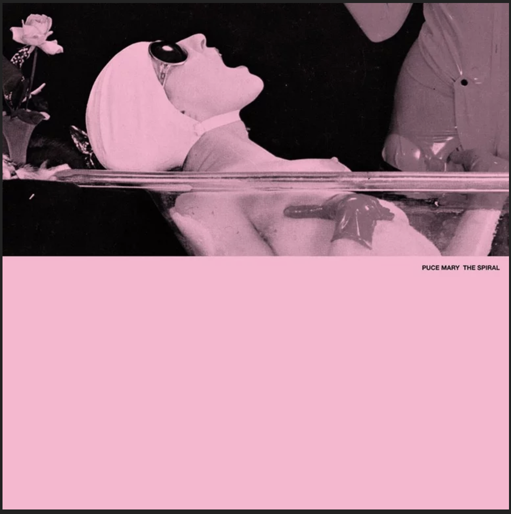
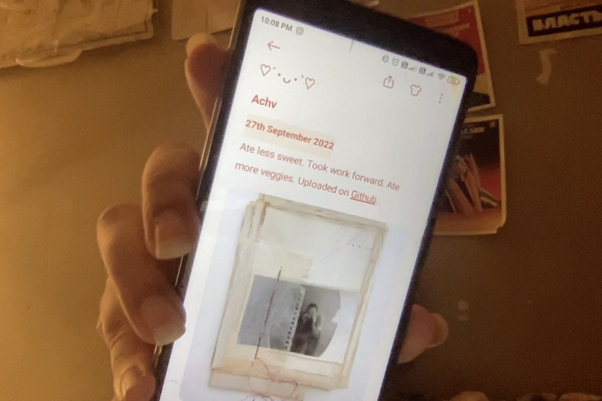
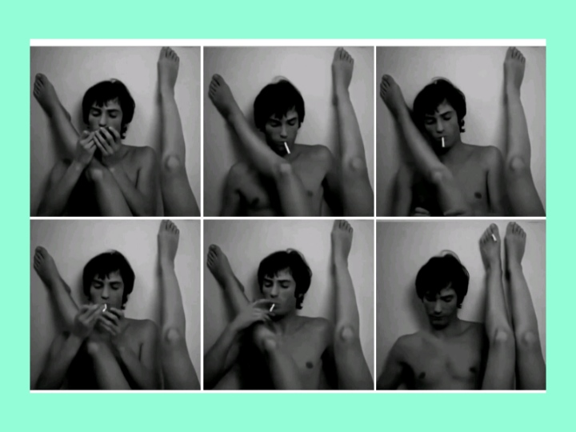
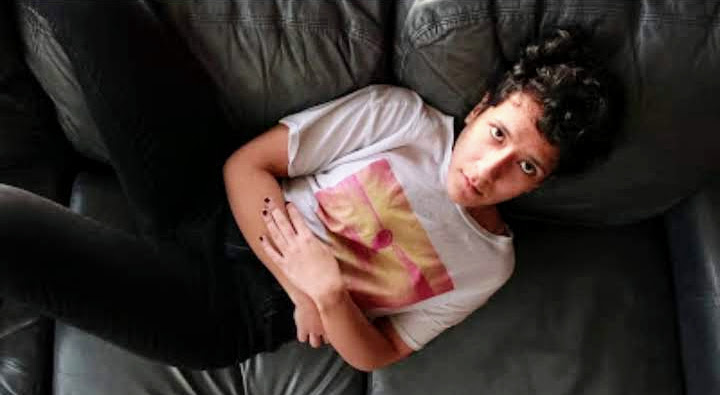
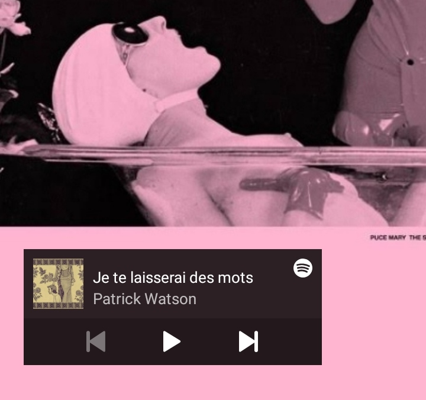

Found this reciept from Delhi Book Fair (1982) burried; holding moments between the stack of old hindi books. My grandfather would always bring back the most amazing things back from wherever he went. According to Carl Jung the best way to discover oneself and heal your inner termoils is by tracing your childhood memories. The only ones I have (or I like to pretent there is nothing else) are of (1.) my grandfather, (2.) the things he had, (3.) the things he brought back and (4.) the things he left behind. Left behind for me to find one day, because consonance.
Found this reciept from Delhi Book Fair (1982) burried; holding moments between the stack of old hindi books. My grandfather would always bring back the most amazing things back from wherever he went. According to Carl Jung the best way to discover oneself and heal your inner termoils is by tracing your childhood memories. The only ones I have (or I like to pretent there is nothing else) are of (1.) my grandfather, (2.) the things he had, (3.) the things he brought back and (4.) the things he left behind. Left behind for me to find one day, because consonance.
 Inspected that reciept more and found that it was for a magazine subscription. The magazine was called SPAN. Found a cover page from SPAN magazine from February 1969. It is a shot of the Earth as seen from moon by apollo. Obsessed more over it because I am obsessed with all things old and rotting. And found another interesting article.
Inspected that reciept more and found that it was for a magazine subscription. The magazine was called SPAN. Found a cover page from SPAN magazine from February 1969. It is a shot of the Earth as seen from moon by apollo. Obsessed more over it because I am obsessed with all things old and rotting. And found another interesting article.
 The article was not exactly about pain but how to deal with it (and so I did not read it). Meanwhile I sat peacefully inside a train of thoughts about pain related articles that I can write. They are: (1.) Why? (2.) Nevermind the why, what if pain is not just a feeling or a response to some chemical reactions but an actual living thing. Like a Homunculus? (3.) That homunculus idea is cool.
The article was not exactly about pain but how to deal with it (and so I did not read it). Meanwhile I sat peacefully inside a train of thoughts about pain related articles that I can write. They are: (1.) Why? (2.) Nevermind the why, what if pain is not just a feeling or a response to some chemical reactions but an actual living thing. Like a Homunculus? (3.) That homunculus idea is cool.
 This index is nice.
This index is nice.
 ╾━╤デ╦︻(▀̿Ĺ̯▀̿ ̿)The idea that coinsidences simply DONOT exist. Even the chaos is so meticulously designed to appear as unbound by rythm. But there is always rythm. Always a beat that hits harder than the other, always a color that looks brighter than the other, always a heart that beats harder than the other, always a person who feels warmer than the other. Does this mean that we go around searching for our musical consonances everywhere we go, in every moment? Such a heartbreaking experience that would be, to find out just how many things and people and moments are just not meant for me.
╾━╤デ╦︻(▀̿Ĺ̯▀̿ ̿)The idea that coinsidences simply DONOT exist. Even the chaos is so meticulously designed to appear as unbound by rythm. But there is always rythm. Always a beat that hits harder than the other, always a color that looks brighter than the other, always a heart that beats harder than the other, always a person who feels warmer than the other. Does this mean that we go around searching for our musical consonances everywhere we go, in every moment? Such a heartbreaking experience that would be, to find out just how many things and people and moments are just not meant for me.
If one zooms on the map to the Homunculous, one notices that the map is circular. The reason is that you will not find the Homunculous there when you reach there the first time, or the third time, or the fifth time. You have to go to Phuktal firt, and then make a round trip back to the Homunculous. Only when you make a round trip can you find the Homunculous. It is not like the Homunculous goes off to eat some Khambir, or howl at the moon. Infact, the Homunculous never leaves the cave. However, the Homunculous like myself has a shifted sense of time and space. And exists only in a circular sense of it. Hence the round trip. Can only exist for you and me in evens, no odds.
 Few years back I decided I wanted to go visit a Homunculous hibernating inside the highest Ladakhi caves. The caves just like those in Nicholas Roerich sketches. On the wall of Homunculou's cave was the quote "Solitude will transmit the message better than the murmurs of crowds." The cave reflected the meditating Ladakhi sky. I had only heard the stories (there were not many) and was keen to share the same cave myself. However, fate decided on putting me another path and ended up not going. Instead I was at JNU, lying in sweat and naked on a filthy hostel bed, smoking my desires away, legs open. It has been 5 years maybe (I have been having trouble putting numbers on my past), I have been craving the same cave again. Aren't paths that are made because of people walking on them called 'desire paths'?
Few years back I decided I wanted to go visit a Homunculous hibernating inside the highest Ladakhi caves. The caves just like those in Nicholas Roerich sketches. On the wall of Homunculou's cave was the quote "Solitude will transmit the message better than the murmurs of crowds." The cave reflected the meditating Ladakhi sky. I had only heard the stories (there were not many) and was keen to share the same cave myself. However, fate decided on putting me another path and ended up not going. Instead I was at JNU, lying in sweat and naked on a filthy hostel bed, smoking my desires away, legs open. It has been 5 years maybe (I have been having trouble putting numbers on my past), I have been craving the same cave again. Aren't paths that are made because of people walking on them called 'desire paths'?
I have been responsible for a man's demise into madness and alcoholism. It takes a great deal of ego and selfish motives to hold oneself responsible for such a thing. Smoke fills my lungs, flow my tears. Is there some way to find me a dose of KR-3? Let me fall into that lap of space where no one remembers me. I wonder if in that part of space and universe, that particular man, goes into madness or not. Is he happy there? Such a paradoxical question. What if I choke throat down of KR-3 only to find that no one is happy anywhere. In no universe, in no space-time. Every form of my existence is living off the hope, that maybe some part of me in XYZ land is sleeping in content. Flow my tears, what a fool. If I could stop I would. But now is not the time, or the space.
“She is always in trouble”. Nawab could be my escape from all the trouble. I could live peacefully. I could be one of those very simple and uninteresting people that you cannot help but ignore and move on. Is my name written somewhere on his palm? Do our lines meet? More importantly, do I want them to? Heraclitus said; “No man ever steps in the same river twice. For it's not the same river and he's not the same man.” Further he explains that “The meaning of the river flowing is not that all things are changing so that we cannot encounter them twice but that some things stay the same only by changing.” Sitting on top of a mountain in Bahang(Manali), chillum in hand (his hand), he sits looking at my face while my lips curl adjacent his fist enabling the smoke to fill my lungs.

Nawab does not know, that with every moment where I am placed in his moving jeep, he is saving moments of me. That is how it is with damaged souls. They need saving from every moment. In the moments that they are not saved, they manage to get themselves in more loss, more hurt, more sorrow. Temporal healing has been helping me relocate myself in time. I have been keeping track of moments. Momentary existence or ksanikavâda. The Buddhist doctrine where life exists not as a series of events being preserved materially, but as moments. Each moment that follows, follows only when the current is annihilated. Only complete destruction of a moment will lead to the existence of another. Only when I am completely indulged and swallowed by the moment, can I annihilate it, otherwise, I will always be stuck in some uncomfortable, inconvenient gap.
“You're extremely careless.” Nawab does not know. How would he, I never told him. And It is okay. Not everything is meant to be known. I am sure plenty people save plenty people on a momentary basis and have not even a slight idea about their deed. It is not out of carelessness or chance that it happens, At least I do not think so. Some things are better left unsaid for the very decency of it. A kind gesture on chaos’ part, to not let us get over our head too much. I see him filling his lungs with the same smoke that fills mine. I see him struggling with life. I had a lot of questions to ask him that I never did. But that is okay, somethings are better left unasked.
My mind keeps going back to the nights I spent naked in JNU hostels. I always felt choked in those dirty beds. The air of the university stinks of pathetic desperation of illiterate blank souls. A place for people with no use or purpose in outside world. A garbage dump, my grandfather used to say. A dump indeed, and everyone that lives there fits right in, like they were born to be discarded in those dirty disgusting beds, fitting right in. I have seen many a naked soul but none as uninteresting as the ones I saw there. It is a dull place, for dull minds. I breathed so much of it in that that feeling of dullness never left my bones.
“You will always need to find some escape from reality because you cannot help it.” My grandfather said while handing me over a set of hard bound Hindi books of love poems. At that time, they did not make much sense to me, seemed inappropriate and mindless. I always thought a person should foremost love their work, then their passion and then themselves. Notion of a romantic love came in way of my sexual desires. Aren't many men out there who know how to balance between a slap and a kiss, so I prioritized the slap.
I make tea the way Rehman taught me. I brush after every meal because that is how my dad did it. I laugh more at life because that is how Rajveer did it. I write in books next to my favorite parts because my grandfather did it. I listen to music a little more different every few years. Some songs I cannot listen to anymore with the same smile because they remind me of someone I loved and lost. I collect little things like bills from restaurants, small toys, broken things because they remind me of good and bad memories. I do my hair a little different every time someone compliments a certain way. We become so much of who we are from the people we meet. Patches of memories and feelings, soothing and harsh, wanted or unwanted but still there.
I have been staring and staring and I cannot seem to wrap my head around it. The roof, there is no roof over my head. There are only walls, and there is me trapped within these walls. But there is no roof. No roof!
Two years ago I stopped volunteering. I used to volunteer regularly all around northern India. I have been connected with many volunteering agencies, NGOs, welfare institutes for years. Two years ago I was travelling to Bulandsheher (Uttar Pradesh) to volunteer at an orphanage. The task was to build a library. Till now everywhere I vounteered I could see smiles and hugs and tears. It made me feel fulfiled, a sense of satisfaction always filling up my heart, a sense of hope in my soul. Two years ago I looked closer, and as I was about to reach the orphanage, the kids saw me approaching and started rubbing mud on their faces. Some picked up cow dung and rubbed it on their sleeves. Some pinched their hair and made it messy. A pan of dark ran across my whole body, something held my throat, choked it and laughed at me. I turned around never to come back. I can still feel it choking me, I can still hear the laughter.
"Call me a bitch and shout at me." I have started lying a lot. I contantly shout back at what hurts me. I have to start working on a dictionary, a word guide. It could be titled; 'A Guide to Understand what is in the Heart of the Stupid from what the Stupid Says'. I could hand it over to anyone who I want in my life, I will not have to print many copies. It would be hardbound, the cover would be me on my kness, head down, in my most vulnerable state, my present state. Some examples of content that would go in it; (a) When you hear; "Call me a bitch and shout at me", interpret the stupid as; "hold me down while I break into pieces".

There is a hope that I need to abandon, that I must abandon, for my own sanity. The hope that that calls I get notified for in my blocklist, are an attempt to collect my broken pieces. Because each of that notification; { 11 april 9:50 pm, 11 april 9:50 pm, 16 april 6:54 pm, 16 april 8:31 pm, 17 april 4:48 pm, 17 april 4:49 pm, 17 april 4:49 pm, 20 april 12:04 am, 20 april 12:04 am, 22 april 9:49 pm, 23 april 9:28 am, 24 april 5:24 pm, 24 april 5:24 pm,24 april 5:24 pm,24 april 8:54 pm,..... 16 may 9:11 pm, 16 may 9:11 pm, 16 may 9:11 pm, 16 may 9:11 pm, 16 may 9:11 pm, 16 may 9:12 pm, 16 may 9:12 pm, 16 may 9:12 pm, 16 may 9:12 pm, 16 may 9:12 pm,.... 1 Aug 7:27 pm, 1 Aug 7:27 pm, 1 Aug 7:27 pm, 1 Aug 7:27 pm, 18 Aug 11:36 pm, 18 Aug 11:36 pm, 18 Aug 11:37 pm, 18 Aug 11:37 pm, 18 Aug 11:37 pm, 18 Aug 11:37 pm, 18 Aug 11:37 pm,18 Aug 11:38 pm, 18 Aug 11:38 pm, 18 Aug 11:38 pm, 18 Aug 11:38 pm, 18 Aug 11:38 pm, 18 Aug 11:40 pm, 18 Aug 11:40 pm, 18 Aug 11:49 pm, 18 Aug 11:49 pm, 18 Aug 11:49 pm, 18 Aug 11:49 pm, 18 Aug 11:49 pm, 18 Aug 11:49 pm, 31 Aug 9:51 pm, 31 Aug 9:51 pm, 31 Aug 9:52 pm, 3 Sep 1:18 am, 3 Sep 5:28 pm, 3 Sep 5:30 pm, 3 Sep 6:12 pm, 3 Sep 6:13 pm, 3 Sep 6:13 pm, 3 Sep 6:14 pm, 3 Sep 6:14 pm, 3 Sep 6:15 pm, 3 Sep 6:15 pm, 3 Sep 6:15 pm.} gives me false hope that when I pick the call, I will hear words that I hopelessly dream of hearing.
I have started lying a lot, but at the moment I need to be honest. Dead honest. About every bruise on my body, about all the healing i need, but before i can be honest to him, i need to be honest to myself. I will start by counting every bruise that is already there, and then prethink of every bruise that is going to follow. Will they understand that my full honesty, is also my final goodbye?
The enormous pang of unbearable pain that hits me every time I wake, became a little more bearable at this moment, this moment as I record is 0356am. Interpret it as whatever, that is the beauty of words, phrases, art, paintings, so fluid. I can make them to be whatever I want. It is more bearable not because I was comforted somehow by kind soft words, or some love or care came my way out of the blue. It is more bearable because with every unbearable pang, I stop feeling a little more. It is a biological defence mechanism that I read about in a journal 15 years back. It is as natural as breathing and as healthy as sleeping.
I have a new sim now; I have lost many phones and in many countries. I have bought many sim cards and discarded even more. It is an unsung idiosyncrasy of mine. But this new sim card is more special to me. I have a strange attachment to it and never wish to lose it. I bought it in Bahang (Manali) from a very small shop situated right opposite the theka that I frequented every day. The store owner asked me if I have lost my phone, I said yes but that it is nothing new I keep losing and finding it all the time. He looked right at my face with such a strange expression and said, “sounds like you’re talking about yourself memsahab”.
I have been keeping my sanity (occasionally) by reminding myself how I am still standing after facing all the blows (in literal and non literal senses). Words, a slap, a kick another kick another slap and I know i will still keep standing. And then there are times when i am just out right insane. And when I am outright insane, I am dancing. "And those who were seen dancing were thought to be insane by those who could not hear the music".
Tender is the night, only for those who cannot spell 'tender'. It is a weird figure of speech that an old German drunk in an old Russian sidedoor bar (in St. Petersberg) slurred at me. I have a distant relationship with the word 'tender'. I have lack of experience of the context to which such a word can be placed. But the very liited experinces that I had always left me wanting more. Obviously my lifestyle is busy pursuing other things.
I have been keeping track of moments. These moments revisit me often, and more very often I get lost in them. It is not just my moments that I have tracked in stored. With very few people I 'talk', and when I do and they share glimpses of their own momentary existence with me, and I form a short illustrated story board of their moments in my head. Some very detailed, some vague. I have filled the vague gaps in vague moments (all falling prey to my need for closure). It is okay sometimes, but other times these same moments come to haunt me. For I have no control over what I store. Even the most unwanted little clipets sit clear in my head. "It is easier to heal cuts when there is no one to see." I see.
Nawab has a collection of old books. He is not a big reader, but he collects some old classics to put up on display for his villa. For someone who does not read, he has a keen eye. How is it possible to have collected such brilliant literature, without knowing it? If I could, I would steal away every one of them for my own. He would not mind if I ask, he would not say no. I can almost imagine him smile. Not at me, but at being admired for something so simple. {or is he smiling at me?}
There are moments where when I am thinking hard about something, I can see traces of it in real life. It happens to everyone. Carl Sagan would say it is all a part of the fact that there are always cosmic connections and with that our very human need to feel connected with the cosmos. Tesla would say that it is radio waves from the universe, because the radio waves are uniform for everyone and everything, people and their environment act similar. I have always had trouble facing these theories, I have always been distant from the cosmos, distant from the environment and even more distant from the people in it. The last time I thought I felt a connection, I ended up looking like a fool. My emotional needs wanted the connection to play out so hard, that in the hustle to make it work I crashed hard. I do not wish to recover from the crash. I have embraced it. It could be some radio waves, I refuse to believe that I have become weak.

Broke the terrace door. Sitting under a shed at 3 am, smoking my cigarette {from the remains of moments spent filling my lungs with bad Dilli gaanja}. One long drag at a time. I have other places to be. My being in other places is somehow suppose to change the way my life goes on. Some geographical location will determine my sanity. How? The way I see it, I am still the same insane person in different geographical cordinates, on different spectrums of time.
Burnt lips. Lick. Peach ice tea. Lick. Mint cigarette. It has been raining hard on my head. And I've been feeling every tip and i've been feeling every tap. Drenched from tip to toe. They cannot tell if I am sobbing. Neither can I anymore.
Buried in my skin, the maps of my past. Some dilettante French poet in my Moscow hostel in 2016 very carefully fabricated an idea in my head. He was an ex-military doctor and always spoke of scars. He believed that scars are nothing but maps to understand what parts of us needs most care. A soft slow finger will one day trace these maps and send delicate pangs of estacy in my heart. Tears will fill the corner in my eye. I will feel a little more that day.

Cyberpunk 2022
These are my 3am dreams. Made up of melancholy and calm.

I remberber writing here once at 0400 about how we become so much of who we are from the people we meet. Patches of memories and feelings, soothing and harsh, wanted or unwanted but still there. What if I do not want a part in me anymore. I cut it out. I see it in my hands, bleeding, and there is nothing I can do. And then I look down at myself bleeding, and there is nothing I can do. So I am just going to let it bleed out. It is going to leave a scar.
How am I doing? (｀д´)ゝ okay. ( ͡° ͜ʖ ͡°) eating healthier {or less i don't know}. ( º _ ºノ) internally sad all the fucking time, (✿◠‿◠) externally appearing okayish {idk maybe not}. (ง’̀-‘́)ง sometimes angry. (-̥̥̥̥̥̥̥̥̥̥̥̥̥̥̥̥̥̥̥̥̥̥̥̥̥᷄_-̥̥̥̥̥̥̥̥̥̥̥̥̥̥̥̥̥̥̥̥̥̥̥̥̥᷅ ) crying a lot sometimes, other times just sitting and staring ( ｏ´_｀ｏ). U ´ᴥ` U He helps{sometimes}. ┏(‘▀_▀’)ノ♬♪ Findind more music. trying.
10,627,200 seconds/177,120 minutes/2,952 hours/123 days/4 months

Prostitution is an economic cycle, and it works very well towards it's goal. Which is to get money. In European cities you can make upto 2000 euros a night. The only thing is that when people buy you, they think they can do anything to you. The problem is you start believing the same. It is not your fault though. It is all about how people thrive and survive. As long as you survive, whats follows is okay.
It is usually easy for people to get away from the wrong they do. One word here, another there and bam a broken heart, an injured soul. All the other has to do is apologize, or better don't. Beat a person down so much so that they are not even left with enough strenght to ask for a 'why'. Everyone deserves a why. But at that point the person starts accepting things as is, the final stage of lost selfworth. The one where they go silent. Mute. There is only one psychologist who believed it to be a healthy coping mechanism in the beginning of 1900s. He is the only one that matters to me.
My heart always skips a micro beat for unexpected smears and shapes painted on some side wall.
meanwhile...

The outlook of my printing press will not be fixed on any particular moe of production or format. There will be a formal coherence between the ieda and the purpose of the book. The book will be aesthetically and philosophically nurtured. Special attention will be given to the book as an object.
Angels die.

An unbearable sensation of choking has taken over my nights. I sleep mostly for 1.5-2 hours a day. I find it fulfilling for now. The choking sensation is new, but I am getting used to it. Like everything else.
"I used to paint my fingernails sometimes as a kid."
"Will you paint mine?"
"I would love to."
My plans to booklaunch yesterday hit break when the printing did not go as expected. But it is fine. I am trying. I am sick, its been two days. But it's fine, I am trying.
"Will you paint mine?"
"I would love to."
My plans to booklaunch yesterday hit break when the printing did not go as expected. But it is fine. I am trying. I am sick, its been two days. But it's fine, I am trying.
At the party last night, it was raining butterflies. Intoxicated out of my mind, feeling nauseated between crowds of people I donot know, I made my way to the terrace of the farmhouse. In the dark with the faded yet loud music drumming my ears while I stare right at the night sky. Looking for some signs from the cosmos, some shooting star for me to wish on, some map in the constellations for me to follow, some radio wave to guide me to some place I can call home. *3 HOURS BACK* Feels like we left from Dwarka hours back and still have not reached our location. It's suppose to be a farm house somewhere in Greater Noida, the people who invited me, have only heard stories of me. I have no clue who these people are, and its good, I feel no sense of obligation to communicate. I can be the girl in the party, sitting in a corner, or on a terrace with earphones in, cigarette lit, dancing occasionally, not looking at anyone in particular, dancing a little more. *3 HOURS LATER* Holly Golightly's voice is drowning out the loud techno music in the background, I am on the song 'slowly but surely'. It is one of my favourite songs of hers. My desperation for some cosmic signal to shoot my way went right into my head and there it was, it was raining butterflies. And sometimes I have to cry
For loving you like I do
Another hour passed, the butterflies kissed my skin and pink flowers grew out of it. * ANOTHER HOUR PASSED* My hips keep moving, it is a part of my body i groove the most when I dance. I feel eyes on me. I can only hear the loud music ringing into my ear while I dance away in the middle of the room. Some hand tried to pull me out of my solitudal dance routine and failed, another tried and failed. And there were the eyes, watching a body painted blue and dancing away at 4am. Can they see the love bites the butterflies left on me? Can they see the pink flowers grooving away with me? Or have the flowers turned blue too?
The rain only feels cosy through a window. From where I stand, with it falling right on my head. It's cold and pin like. It is just how things are at the moment, ironically i lose the roof over my head with the arrival of the family. From where I stand, it's cold and pin like. The rain only feels cosy when you have someone to embrace through it.
Pick any porn site, the top videos that everyone is watching has women being called bitches, begging for dicks, licking feet, sucking balls, treated like shit. I am fine with it, i actually enjoy it. But i think I would be respected more if I did not. .I would be accepted more if I were plain old vanilla. I would have normal boyfriends, and I would be loved like a normal person. Someone would want to be intimate with me. Someone would want to kiss every inch of my body. But that's not the case. And its okay. Fuck these small mind boring imature penetrators. It takes brilliance to impress me.
“Anticipation of Love"
Neither the intimacy of your look, your brow fair as
a feast day,
nor the favor of your body, still mysterious, reserved,
and childlike,
nor what comes to me of your life, settling in words
or silence,
will be so mysterious a gift
as the sight of your sleep, enfolded
in the vigil of my arms.
Virgin again, miraculously, by the absolving power of
sleep,
quiet and luminous like some happy thing recovered
by memory,
you will give me that shore of your life that you
yourself do not own.
Cast up into silence
I shall discern that ultimate beach of your being
and see you for the first time, perhaps,
as God must see you—
the fiction of Time destroyed,
free from love, from me.” ~JLB
I hate how my brain works. It gets stuck on a thought. And then it feels like I am chocking. The problem is that everyone around me thinks it's a choice. It's not.
I was fighting with everyone and anyone justifying everything he was, (he is, he will be) and I turned around tired and vulnerable only to find him pointing a finger at me standing with everyone else. And there I was, a fool, looking for his warm embrace, to save me from the winters. Never realising that as soon as winter arrives, he leaves.
I have started being better than yesterday, each day, one day at a time, on my own but better. I just need to keep breathing. I have become a violent ocean. For so long struggling against the pull of the moon. But the sun will rise tomorrow. And who knows what the tide will bring to me.
I have been taking long seemingly futile (to the other) walks by the ocean again. It has been months and I am back here. This place, this sand to my feet, the air in my hair, the waves stealing a touch of my skin. I am back here. Last night I was walking by the ocean in the absolute dark. Some butterfly must have flutterred it's wings because involuntarily I started walking with my eyes closed. It was as if the sound of the violent lunar waves hitting the soft warm sand had become my sense of sight. The waves taking over as my senses were pulling me closer to them, I could feel them at my feet and yet the overwhelm took over me and kept me from giving control back to my eyes, to sense, to logic. The human fears, tears, time took over and I finally did open my eyes. Half in water half in land. I am back here.
The pace has changed today, change is the only constant. But its rather slow, we miss it everyday, lost in our fast lives. Unbothered we keep running. But I felt it today. Under my skin the feeling of change has settled and it will not go away, atleast I hope so. Holding onto the present like that crow in the sand holding on to what remains of the dead fish. I felt it. The very fragile momentary in the vastness of what we call a moment. In it I could feel my feet burrying in sand, and as I let my thoughts flow with the wind, I almost hoped the sand wwould take me all in. I was not looking at the ocean so as to ask for it to engulf me today. It was the sand. it kept trying and I involuntary kept moving. That's life. Holding onto itself i guess.
(｀д´)ゝangy no talky